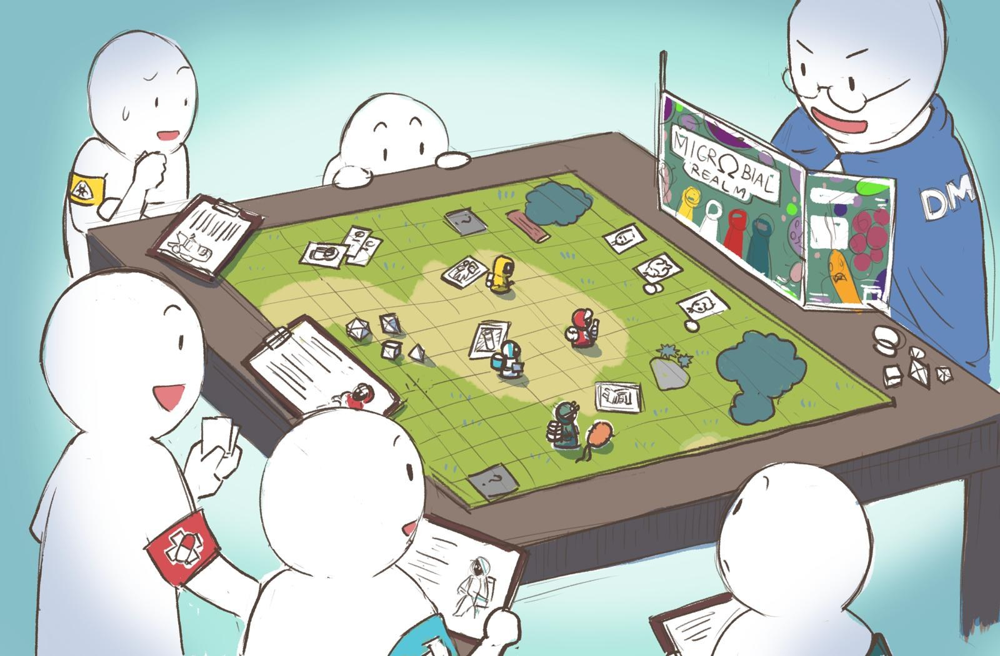
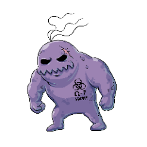
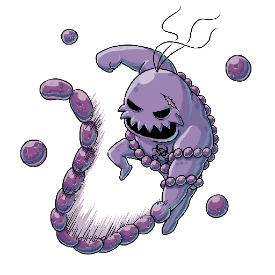
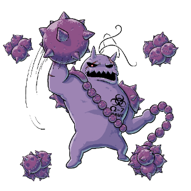
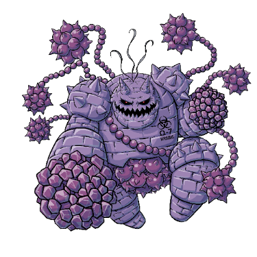
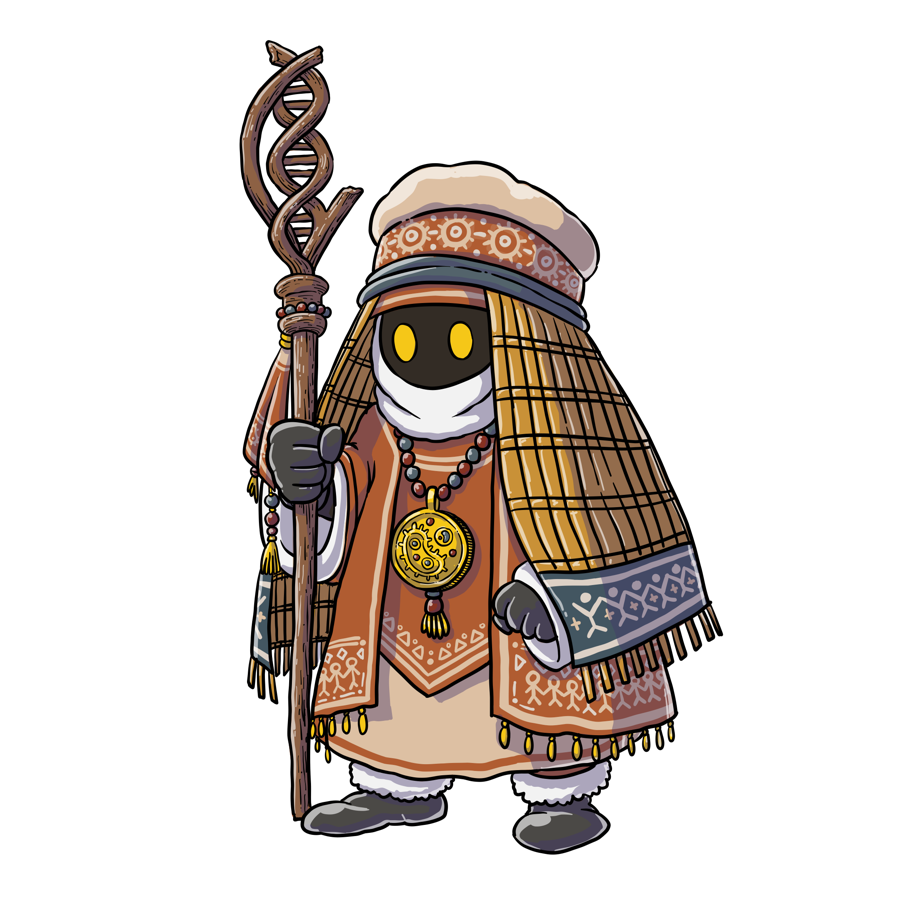
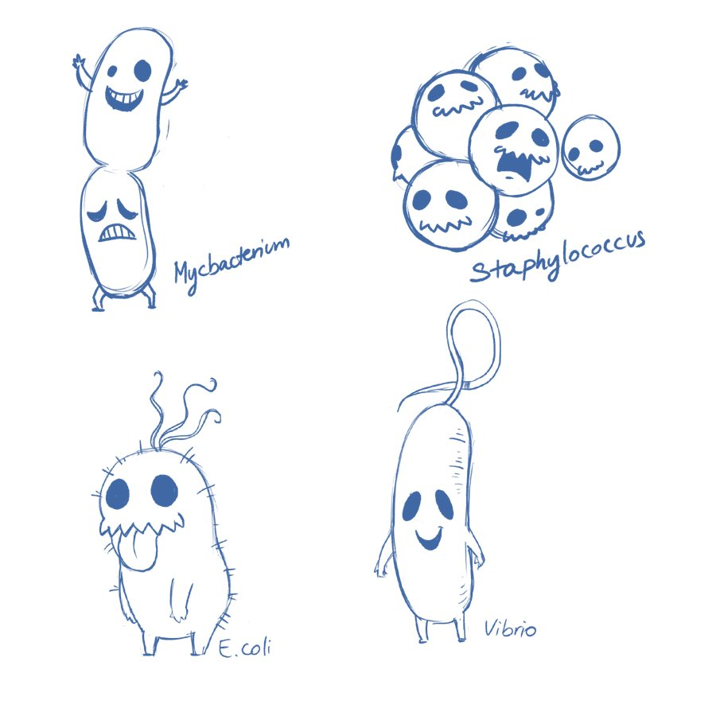
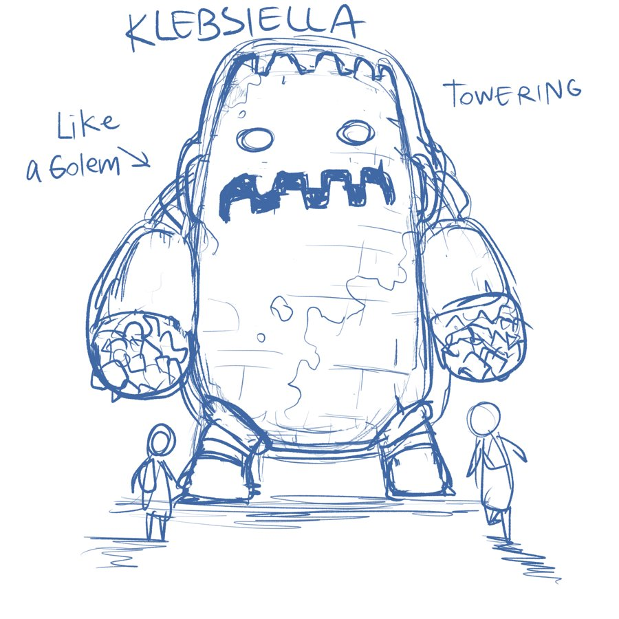

Microbial Realm
The Resistance Rising — a role-playing game about antimicrobial resistance, for teenagers.

Tabletop play — gameplay illustration
- CREATED BY
- Madhushree Kamak (India) & Kanpong Boonthaworn (Thailand)
- AUDIENCE
- Teenagers, 13–18, in schools and communities
- FORMAT
- Web game + facilitator-led tabletop
- SINCE
- 2024
A team of healers tracks a superbug across a continent. Along the way, players learn that how you use an antibiotic matters as much as which one you use.
The science is built into the rules, not told in cutscenes. Resistance grows as a visible game variable, the triage sequence is the condition for winning a fight, and traditional and community knowledge carries real tactical weight alongside medicine. The game runs in a browser or as a tabletop session, so it works in classrooms with or without screens.
THE PREMISE
You grew up in the golden age of antibiotics, when every infection seemed conquerable with a simple pill. Then OMEGA-7 arrived, resistant to everything.
Survivors from a city it destroyed cross the ocean to hunt it down. The locals see them as saviours with powerful medicines. The healers learn that the locals know a few things too.
Four healers. No faces.
Each class stands for one part of antimicrobial stewardship: identify, treat, support, prevent. Players name them; nobody wins alone.
Select a class
{{cur.name}}
{{cur.job}}- {{p.t}} {{p.d}}
The science is the rules
Every fight follows the same triage. Skip a step and the game remembers.
- 01 · IDENTIFY The Druid analyses the bacteria Roll 1d6. On 3–6, the species is identified and targeted antibiotics unlock.
- 02 · PRESCRIBE The Paladin uses the right drug Targeted antibiotics hit three times harder than broad-spectrum ones, which feed resistance.
- 03 · COMPLETE Finish the course Leave a population alive and the next of its family returns with +1 Resistance Point.
Resistance you can see. Every microbe carries Resistance Points that weaken the party's attacks. Misuse raises them.
Knowledge as co-equal. Items and allies from local, traditional practice give real tactical advantage, without replacing medicine.
Fighting bacteria with bacteria. Beneficial microbes and public-health measures debuff pathogens; two together make it permanent.
The microbes
Each family gets harder, and more resistant, the more it is mistreated.
Ω-7 evolves
The superbug that destroyed the healers' city. Every incomplete course and every shortcut feeds it. Over the campaign OMEGA-7 grows from a lone bacterium into a chained, armoured colony, resistant to everything.




- RESISTANCE
- RP 5, the highest in the game
- RELAPSE
- Regains population every 3 rounds
- TO WIN
- Everything the healers learned, together
Designed with the community
Two rounds of review with a Community Advisory Board in Thailand did more than fix details. Members added things the design was missing, and exposed Western defaults in its characters, settings and assumptions about how people meet the AMR problem.
- +A village health volunteer joined the cast, standing for community health infrastructure absent from the first draft.
- +Character design was reworked with Asian design elements.
- +Modular chapters let groups play different routes across repeated sessions.
- +Complexity tiers adapt the mechanics to different ages and prior knowledge.
Who the healers meet
Local characters carry the knowledge the visitors lack, from prevention on the farm to care in the infirmary.

From the sketchbook
Early studies for the microbes and allies: a golem for Klebsiella, a golden cluster for Staphylococcus.


CREDITS & SUPPORT